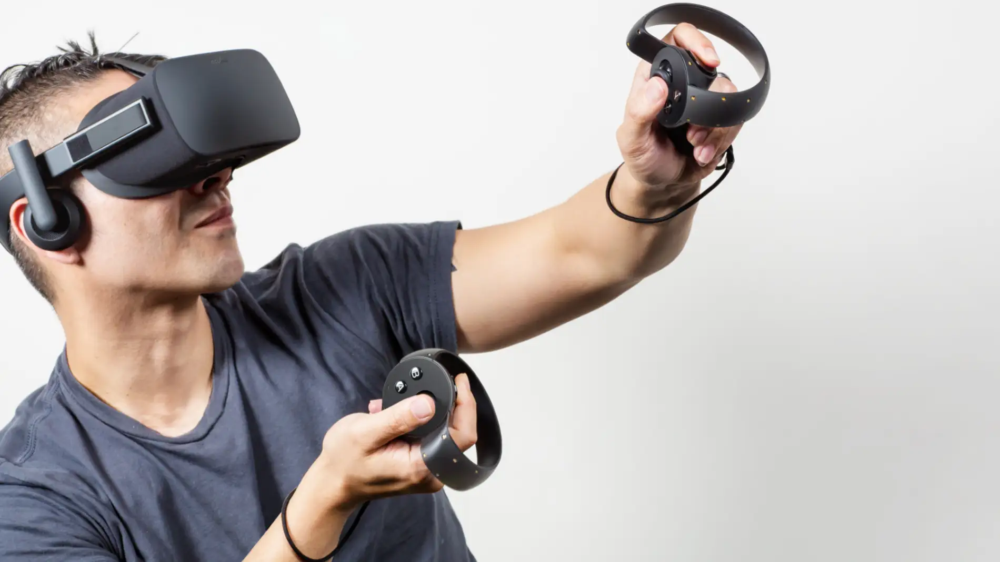

Introduccion
Oculus Quest 2 es uno de los principales productos de la empresa Oculus, fundada en 2012, posteriormente adquirida por Facebook en 2014, pasando en 2018 a ser una marca de Facebook Technologies, LLC. Otra división de la misma empresa, Facebook Reality Labs, se centra en la realidad virtual y aumentada y fue renombrada como Meta, de ahí que el Oculus Quest 2 se convirtiera en un producto de Meta y Reality Labs.
Principales características
Entre sus principales características podemos señalar que presenta un cómodo diseño de 4×5,2
pulgadas que solo pesa 1,1 libras. La batería del dispositivo es lo suficientemente potente como
para funcionar durante dos o tres horas con una sola carga. Externamente es de color gris claro con
una estética aerodinámica que se amplia a la ubicación de los auriculares de sus cuatro cámaras.
Está diseñado para un uso itinerante libre donde los cables no limitan a los usuarios. Admite una
conexión por cable e inalámbrica a su PC.
Cada ojo tiene acceso a una pantalla de 1832 x 1920. La pantalla se integra con cuatro cámaras de
gran angular que admiten una pantalla de paso. Ofrece seis grados de libertad para los
usuarios, y la seguridad descansa en su función de guardián. Estas especificaciones son
posibles gracias a las mejoras en el hardware de back-end del sistema. Utiliza un procesador
Qualcomm SnapDragon XR2 y funciona con 6 GB de RAM y 64 GB de almacenamiento local.
La web es una de las partes más críticas de cualquier experiencia relacionada con la tecnología. El
Oculus Quest 2 ofrece una opción predeterminada con su propio navegador Oculus. El navegador
Oculus utiliza el motor Chromium para proporcionar compatibilidad tanto con sitios estándar como
con aquellos que utilizan la realidad virtual basada en la web. Los desarrolladores pueden
proporcionar funciones adicionales de realidad virtual aprovechando la API especial del navegador.
Usos de las gafas
El uso más conocido es en el ámbito de los videojuegos, pero su experiencia va más allá del mero entretenimiento o de los mundos virtuales o en el metaverso.
Las experiencias en viajes que ofrece son infinitas, ya sea por medio de aplicaciones especializadas en este tipo de experiencias o simplemente entrando al canal de Youtube de VR,
donde encontraremos espectaculares vídeos.
Con las gafas de realidad virtual Oculus Quest 2 podremos acceder a Messenger, Bigscreen VR, Rec Room, VR Chat y a todos los portales de redes sociales disponibles en el Metaverso.
En éste podremos realizar reuniones, disfrutar de eventos deportivos, conciertos o acceder a estrenos de series o películas.
Alguna de sus principales aplicaciones son en el ámbito educativo/científico:
- - National Geographic Explore VR.- nos permite visitar grandes lugares de nuestro planeta, y realizar hermosas fotografías. Ofrece la posibilidad de experiencias interactivas, como navegar alrededor de un iceberg en kayak o escalar una pared de hielo.
- - Wander.- ideal para aprender más sobre diferentes lugares y ubicaciones de la tierra. También podemos entrar en los museos y lugares históricos como si estuviésemos allí.
- - Gravity Lab.- para aquellas personas que quieran divertirse con la física y la electrónica. Cuenta con más de 55 puzzles con 3 variaciones en cada una, en el que deberemos de solucionarlos mientras exploramos una base lunar abandonada en el espacio. Al usar estas aplicaciones, ponemos la prueba de nuestra habilidad de pensamiento crítico y creativo para descubrir las soluciones a los diferentes rompecabezas.
- .- 3D Organon VR Anatomy.- Nos permite descubrir y explorar la anatomía humana. Podemos visualizar el sistema esquelético, los músculos, los vasos sanguíneos, los nervios y otros órganos en 3D. La aplicación es utilizado en diferentes universidades y hospitales de todo el mundo.
- .- Mondly VR.- se dedica al aprendizaje de idiomas y ahora lo hace de manera virtual con una mayor inmersión. Tenemos diferentes escenarios con distintos personajes que interactuaran con nosotros para poder tener una conversación más fluida y conseguir una buena pronunciación.
- .-Fetal Heart VR.- permite realizar ecografías virtuales de modelos cardíacos normales y anormales, sirve para aprender características anatómicas y geométricas específicas típicas de las enfermedades cardíacas congéntias.
- .- Vlume.-aplicación para visualizar datos de estudios científicos. Usa datos obtenidos con microscopios de alta resolución y los muestra de una manera más visual. Las células capturadas por el microscopio pasan a ser gigantescas estructuras tridimensionales que el investigador puede examinar desde cualquier ángulo. 
Sus principales inconvenientes serían:
- Pérdida de la percepción realista espacio-tiempo, sobre todo al salir del espacio guardián. Con determinados programas pueden surgir problemas de adaptación con repercusión física (mareos, cefaleas…).
- Aislamiento de la propia realidad.
- Pueden generar dependencia.
- Lesiones físico-sensoriales.
- A nivel usuario cuestiones económicas (incluyendo extras).
- Las gafas pueden empañarse, limitaciones en portadores de gafas habituales.
Link sobre las características del dispositivo